journal standard luxeの
スペシャルレーベル《SUNDAY》第17弾！
ラックスのプレス秋山裕子が、
今リアルに着たいユニセックスな
ベーシックアイテムをお届けします。
Illustration:Hisayuki Hiranuma /
Art Direction, Photo, Styling:Team SUNDAY
SUNDAY SHEER T-SHIRT DRESS BLACK
シアーTシャツが便利すぎて着過ぎてしまうので、長くしてワンピースにしました。
元々シアーTシャツはたっぷりとしたメンズのTシャツの作りなので、そのまま長くしても身幅はたっぷりしています。
ズルっと長めで作りましたので再度スリットは膝上まで深めに入れてます。
着方は自由！シアーTシャツと同じ使い方で、遊んでください。
Tシャツにデニムだけだとちょっとラフすぎるなって時にバサッと上から着るだけでも気分が変わります。
アクセサリー感覚で楽しめますよ。SUNDAYTシャツワンピースと合わせて着れるように作っているので、シアーTワンピースの方が着丈長いです。黒のみ、フリーサイズ。
PRINT T-SHIRT(SUNDAY) WHITE / BLACK
NEWプリントです！ 少し斜めに傾いてるSUNDAY。シンプルだけど他にないデザイン。毎回言わせてください。結局Tシャツな訳です。絶対着るんです。一年の半分暑いですし。
そして大人が着れるプリントTシャツがなかなか無いんですよね。なので、必死に作ってます。笑 たかがプリントされどプリントですよ、毎年ちゃんと気分がありますから。
もちろん1枚で着てもいいけど、シアーTシャツやシアーワンピース、シアーシャツも合わせてみてね。
ベースのTシャツは少しキレイ目なもの、毛羽立ちの軽減されたもの、でも首リブはしっかりしたもの、オーバーサイズでも肩がキレイに落ちるものが好きなので、去年と同じです。
白・黒の2色展開、フリーサイズ。日本メーカーのボディを使用、メンズのXLくらいのサイズです。
SUNDAY PANTS(BLACK)
黒のハンサムワイドパンツはいつもと同素材同型です。
2サイズ展開にして前回とっても喜んでいただき、自分でもM.Lどちらのサイズも履いてますが、太さが全く違って最高です！丈は一折り分ほど違いがあるので、私はＬサイズを一折り分丈詰めしましたが、みなさんも裾上げする際は、一般的なシングルステッチ(たたき仕上げ）で大丈夫ですので。パンツの裾が解けるのが嫌なので、SUNDAYパンツは初めからシングルステッチにしています。
前回もご購入できなかったというお声が多かったので、今回は是非！そしてどちらかお持ちでも、是非色違い、サイズ違いでも楽しんでみてください。ハイウエスト部分を折り返しても可愛いですし、シルエットの良さを実感してもらえると思います。そしてなんといっても黒は雨の日の救世主なんですよね。
Ｌサイズは全体的に大きいです。SUNDAYベルトととっても合います。MとLの2サイズ。
SUNDAY TOTE BAG BIG / MINI
前回大変好評いただきましたトートBAG。あっという間に完売してしまいすみません。今回は新しく黒も作りました。真っ黒も良いですよね！
BIGは、肩掛けできる持ち手の長さにして、内側にジップを付けたので中身が見えません。ちょっと荷物が多い時や、荷物が増えるの確定の時、欲しいと思ってました。それと、スーツケースにもう一つって時ありませんか。スーツケースに乗せるBAG。
MINIは、センターのちっちゃいポケットにAirPodsがキュッと収まりました。500mlのペットボトルを立てて入れて、蓋がちょっと見えるかなくらいのサイズ感。
刺繡のSUNDAY。白と黒の2カラー。家族に使われる可能性大。工場さんが一生懸命作ってくださいました。
SUNDAY KEY RING 2SET
キーリングを2つSETとステッカーも付けて真空パックしました。
クリアとピンクセット、グリーンと白セット。
前回同様、リング部分をボールチェーンにして、トートBAGにも付けやすくしました。プレゼントにも喜ばれます。
SUNDAY ANTS(BEIGE)
普通のカジュアルなチノパンツではなくキレイにも履ける大人なチノが欲しいと思って、少し光沢のある素材で作ったワイドなチノパン。
前回までのチノパンツの色が廃番となってしまい、生地は同じなのですがほんの少しだけ色が変わりました。もう作るのをやめようかと思ったのですが、このベージュもモードでとっても素敵なので前回と同型で作りました。ただ前回のブルゾンと色が違うのはごめんなさい。
Ｌサイズは全体的に大きいです。SUNDAYベルトととっても合います。MとLの2サイズ。
PRINT T-SHIRT(Club Sunday) WHITE
NEWプリントです！ クラブチームSUNDAY、入会はいつでもどうぞ。
カジュアルなロゴデザインもモノトーンにすると大人な雰囲気に。そして、スウェットパンツとの相性もぴったり。スウェットパンツにSUNDAYのジャケット羽織ってこのロゴ見えるの可愛いんですよ。もちろん前回のZIPブルゾンにも良い！
ベースのTシャツは少しキレイ目なもの、毛羽立ちの軽減されたもの、でも首リブはしっかりしたもの、オーバーサイズでも肩がキレイに落ちるものが好きなので、去年と同じです。
白のみ、フリーサイズ。日本メーカーのボディを使用、メンズのXLくらいのサイズです。
SIDE PRINT T-SHIRT(Club Sunday) WHITE
TシャツのサイドにClub Sundayのプリントを。控えめなのもあったら便利。気分で選びましょ。ベースのＴシャツはClub Sunday Tシャツと同じもの。
白のみ、フリーサイズ。日本メーカーのボディを使用、メンズのXLくらいのサイズです。
SUNDAY SHEER T-SHIRT WHITE / BLACK
前回買えなかったというお声をいただいたので再販します。オーガンジーの透けるTシャツです。
一番便利でオシャレになるのが、Tシャツの上に着るだけ。もちろん、キャミソールやタンクトップにもOKですが、Tシャツに着て可愛くなるように作りました。
こだわりは、Tシャツのように作ったところ。今いろんなお店で透けるアイテムがあるけど、Tシャツの形でいいのになぁ、と思っていて。
なので、SUNDAY Tシャツより一回り大きく、ネック部分もTシャツのリブがあるようにロック付けにしました。ここの縫い方すごく難しいのでちょっとのヨレはご愛嬌で。。
柔らかすぎず硬すぎないオーガンジー。
白と黒の2色展開、フリーサイズ。2色あっても気分が変わって便利ですよ。
SUNDAY ECO BAG
エコバック作りました。覚えてますか？５年前に一度だけ白を作ったんです。
エコバッグを使うことは当たり前になってきてますよね。黒が欲しかったのと、トートBAGと一緒に持ってもオシャレ！と思い、５年ぶりに作りました。収納したときのサイズや紐の長さは変えましたが、マットな柔らかい質感は同じです。
トートバッグの持ち手にキーリングのように付けても可愛いですよー。
黒のみ、フリーサイズ。
SUNDAY SWEAT WIDE PANTS
スウェットパンツNEWデザインです！いつものSUNDAYスウェットパンツをダボっとワイドにして、股上をさらに深く、裾は切りっぱなし使用(切りっぱなしといっても解れませんよ）にしました。ワイドなスウェットパンツ可愛いですよね。
サイドに縫い目がないのでシルエットがきれいに落ち感が出るのと、横から見た時にフラットなんですよ。
SUNDAYのロゴもさりげなくサイドにプリントしています。SUNDAYスウェットハーフZIP(ロゴの大きさ同じ）や、前回のSUNDAYプリントスウェットと同素材なので、グレーはセットアップで着用できます。
グレーのみ、フリーサイズです。
SUNDAY SHEER T-SHIRT
2024年に作ったSUNDAYシアーブルゾンの柔らかすぎず硬すぎないオーガンジーでシャツを作りました。
透けてばかりでごめんなさい。でもね、暑いじゃないですか最近の夏！暑いけどおしゃれしたいじゃないですか！でも着るだけでモード感出るし、エアコン効きすぎてる時ちょうどいいし、結構万能なんですよシャツも。
Tシャツの上に羽織るだけじゃなく、インナーにしても可愛いし、インナーを黒のキャミソールにしたらちょっとドレッシーになる。ベースは2025年のSUNDAYシャツプラスネクタイのメンズシャツの型です。
黒のみ、フリーサイズ。
SUNDAY SHEER T-SHIRT DRESS
毎年好評のワンピースの黒のみ再販です。
メンズＴシャツをワンピースにしたみたいな。ネックはリブが太く、空きすぎないようにしているのがこだわりで、いつものluxeのゆとりのある首回りとは全然違います。
ネックはキュッとしてるので、苦手な方はごめんなさいですが、身幅と袖周りはゆったりしています。
パンツを合わせてもいいようにスリットを片側にだけ入れています。もちろん一枚で着てもスリットから足が出過ぎないように、スリットはひざ下からにしています。
そしてバックプリントのSUNDAY。シアーTシャツを着ても、ロゴが透けて可愛い。
今回は是非、シアーTワンピースと一緒に着てほしいです。
黒のみ、フリーサイズです。
On Sunday, Sunset
journal standard luxeのスペシャルレーベル《SUNDAY》第17弾！
ラックスのプレス秋山裕子が、今リアルに着たいユニセックスなベーシックアイテムをお届けします。
店頭にてSUNDAYアイテムをお買い上げの方に先着で、新作ステッカーをプレゼント。
※数に限りがあります。なくなり次第終了となります。
販売アイテム
● SHEER T-SHIRT
● SHEER T-SHIRT DRESS
● SHEER SHIRT
● PANTS (
BEIGE
/
BLACK
)
● PRINT T-SHIRT(Club Sunday)
● SIDE PRINT T-SHIRT(Club Sunday)
● PRINT T-SHIRT(SUNDAY)
● T-SHIRT DRESS
● SWEAT WIDE PANTS
● BELT
● KEY RING SET
● TOTE BAG (
MINI
/
BIG
)
● SOCKS
● ECO BAG
販売スケジュール
●先行受注：2026.06.16（火）
BAYCREW'S STORE（先行受注開始）
●販売開始：2026.06.20（土）
各店舗・BAYCREW'S STORE
販売店舗・サイト
journal standard luxe 表参道店／
ルミネ新宿店／
二子玉川店／
丸の内店／
大阪店／
京都店／
ベイクルーズストア名古屋店
BAYCREW'S STORE
最新の販売状況は、
OFFICIAL Instagram
でご確認ください